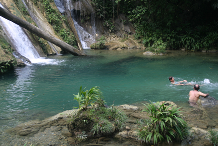
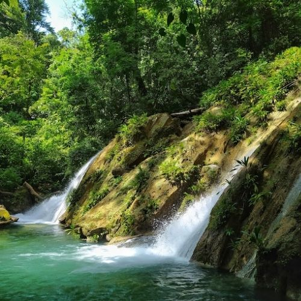
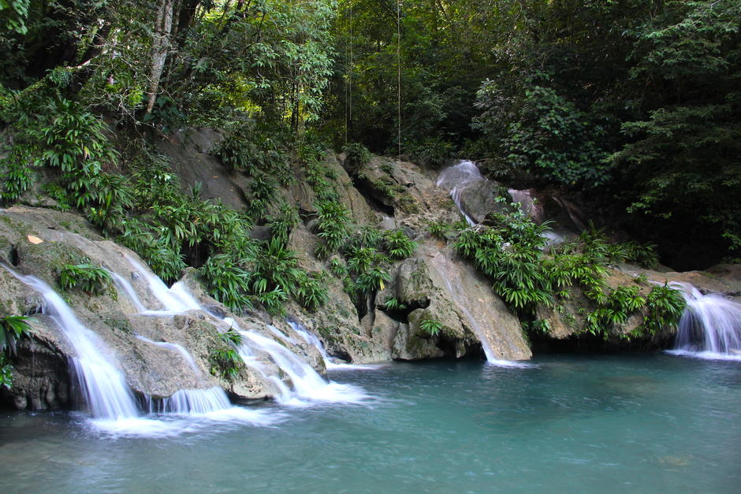

Las Escobas es una reserva natural famosa por sus senderos, río de agua clara y abundante flora y fauna. Es excelente para caminatas, observación de animales y convivencia familiar
El Sendero Las Escobas es una aventura natural que combina cascadas, pozas de aguas cristalinas y densa vegetación selvática. A lo largo del recorrido se cruzan puentes colgantes y se descubren miradores naturales que ofrecen vistas privilegiadas de la bahía de Amatique. Es el destino ideal para quienes buscan aventura y contacto directo con la naturaleza.
Senderismo, baño en cascadas, cruce de puentes colgantes, fotografía y observación de flora y fauna.


